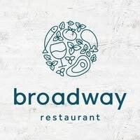
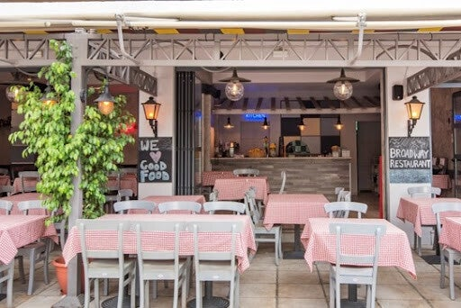
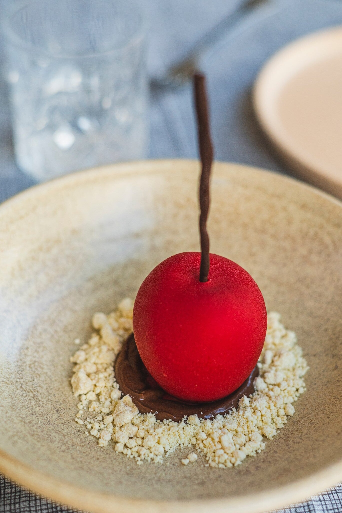
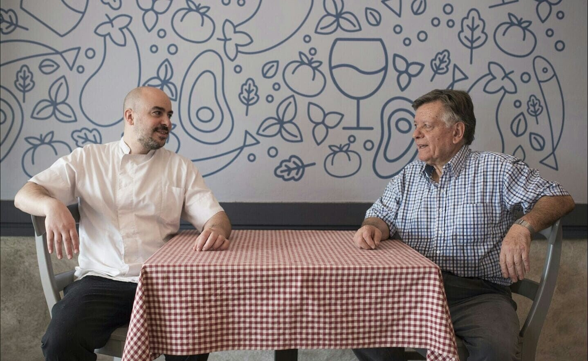
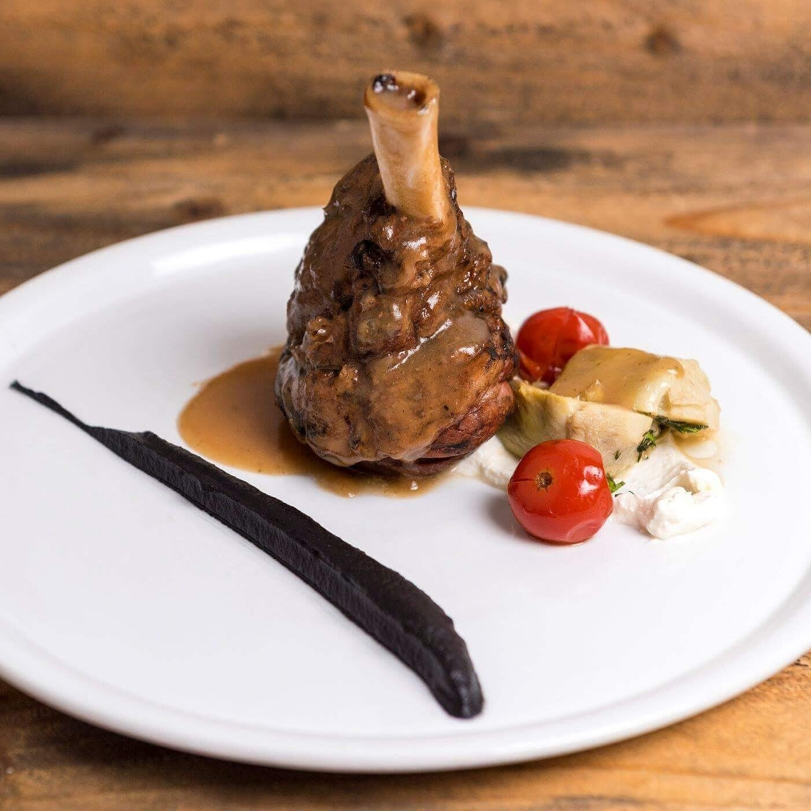
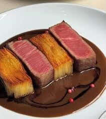

Lambi
Gastronomisch Grieks
Over dit restaurant
Broadway is geen gewoon restaurant. Hier komen traditionele Griekse gerechten samen met moderne presentatie – gastronomisch hoogstaand, zonder de ziel van de Griekse keuken te verliezen.

Sfeer & eten
Andere etablissementen laten die diepgang vaak liggen; hier proef je het verschil. Om zeker te zijn van een tafel in dit populaire restaurant is vooraf reserveren verstandig, vooral in het seizoen.


Praktisch
Gelegen in Lambi. Openingstijden liggen meestal rond 12:00–23:00. Telefonisch een tafel regelen is aan te raden bij drukte.


